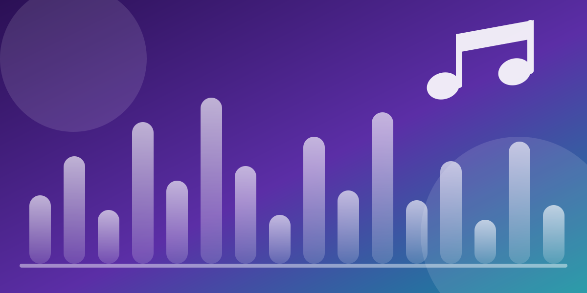

Projeto final · WDD 131
Descubra e organize suas músicas favoritas
O MusicList reúne músicas separadas por categoria e playlists prontas para cada momento do dia. Navegue pelo acervo, salve o que você gosta e monte a sua própria lista.
O acervo em números
Destaques da semana
Uma seleção com uma faixa marcante de cada categoria, para quem está chegando agora ao site.
Navegue por categoria
Cada categoria abre o catálogo já filtrado. As músicas trazem título, artista, ano e uma breve descrição.
Falta alguma música aqui?
O acervo cresce com a ajuda de quem visita o site. Envie a sua sugestão e conte em qual ocasião ela combina melhor.